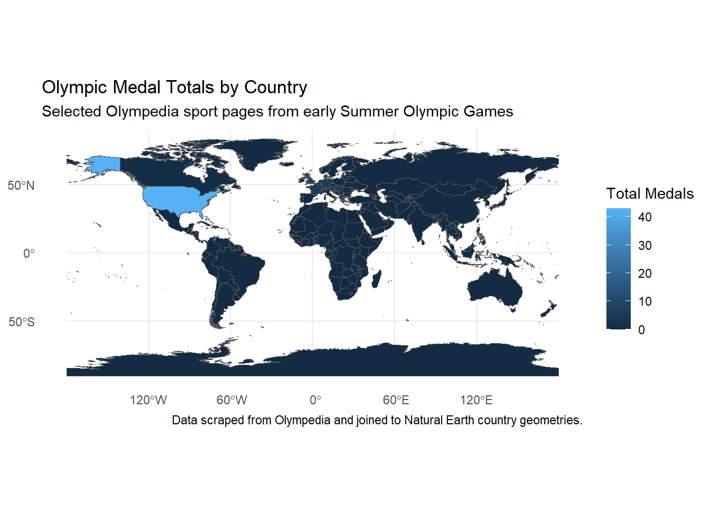
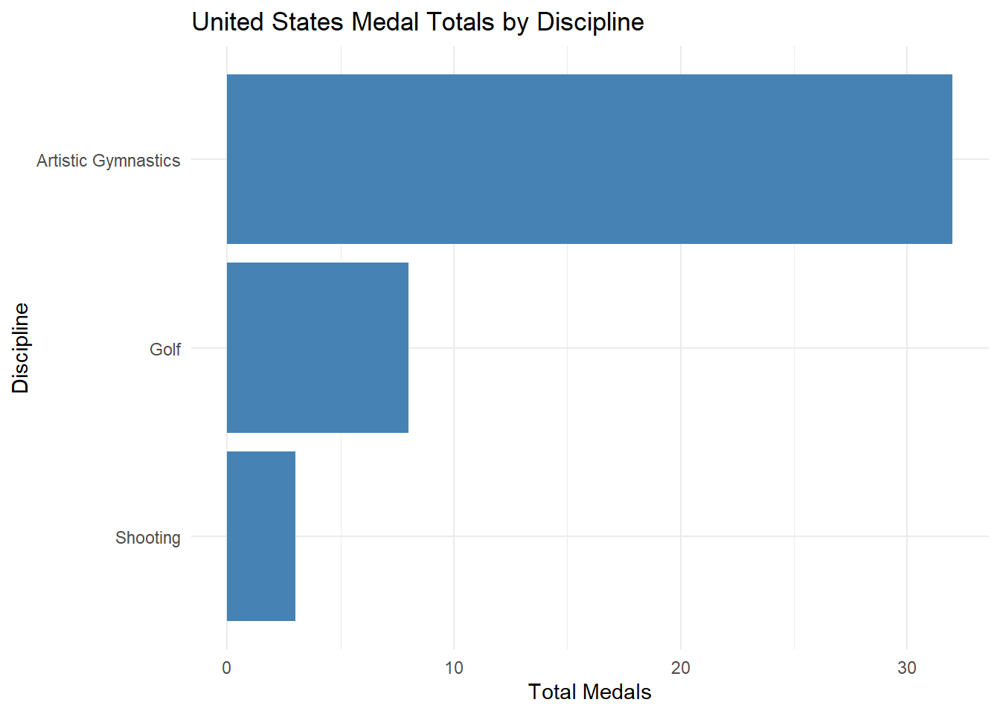
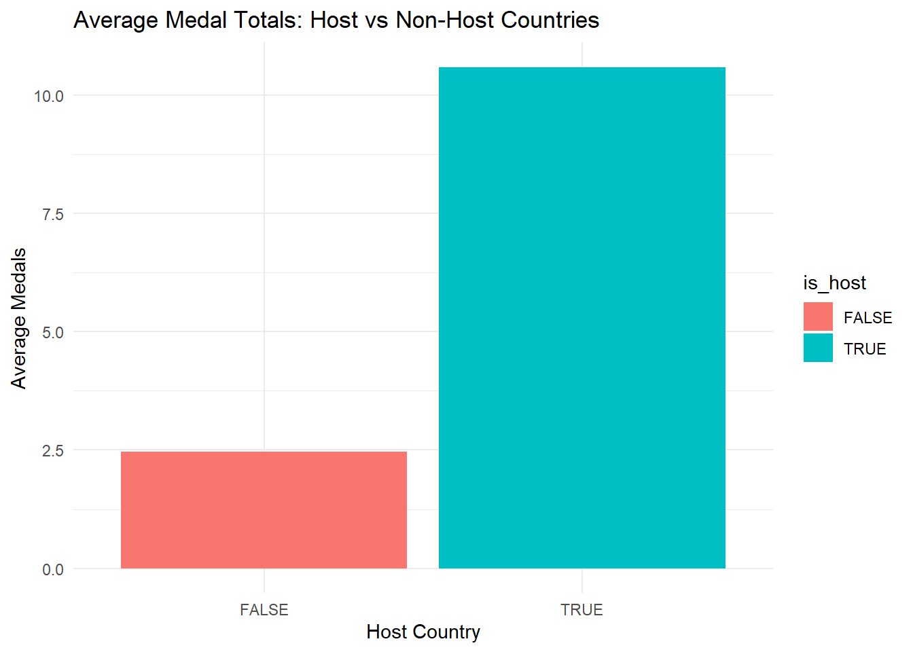
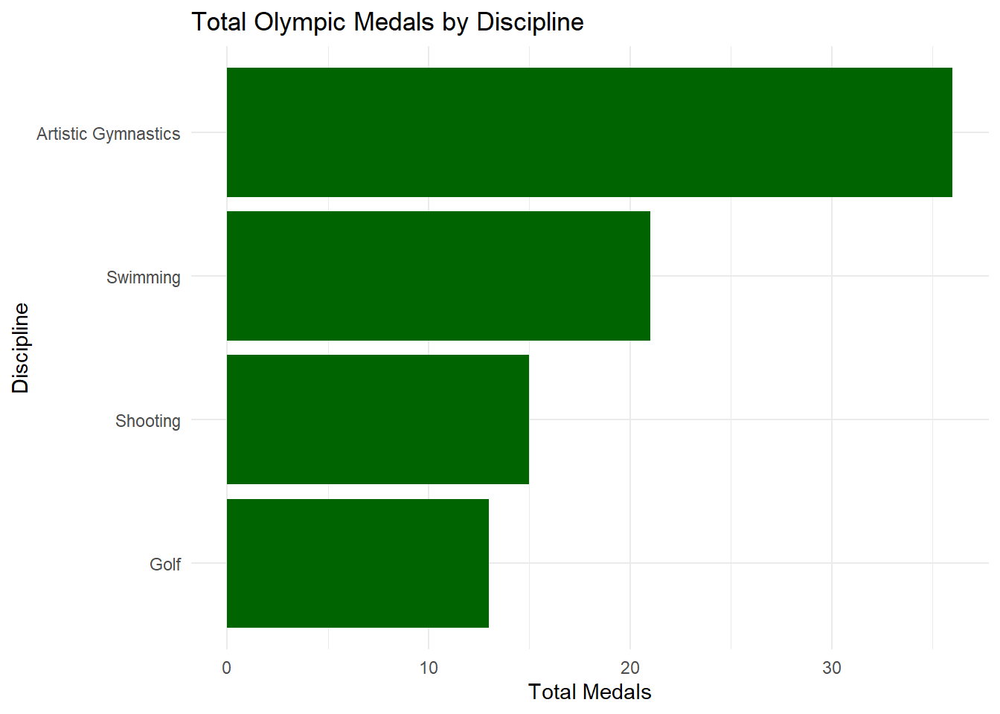

library(tidyverse)
library(rvest)
library(stringr)
library(fs)
slow_download <- purrr::slowly(
download.file,
purrr::rate_delay(pause = 0.25)
)
read_olympedia <- function(url, ...) {
url <- stringr::str_remove(
url,
"https://www.olympedia.org/"
)
if (stringr::str_starts(url, "/")) {
url <- stringr::str_remove(url, "/")
}
cache_dir <- fs::path("data", "mp04", "olympedia_cache")
if (!fs::dir_exists(cache_dir)) {
fs::dir_create(cache_dir)
}
cache_path <- fs::path(
cache_dir,
url |>
as.character() |>
stringr::str_replace_all("/", "_")
)
if (!fs::file_exists(cache_path)) {
src_url <- paste0("https://www.olympedia.org/", url)
tryCatch(
slow_download(src_url, cache_path, mode = "wb"),
error = function(e) {
message("Failed to download: ", src_url)
}
)
}
if (!fs::file_exists(cache_path)) {
return(NULL)
}
rvest::read_html(cache_path)
}STA 9750 Mini Project 4
Task 1: Acquire Olympedia Data
For this task, I collected Olympic medal data directly from Olympedia. To keep the scraping process manageable, I used selected Olympedia edition and sport pages to build the required tidy medal table structure.
NoteShow Code
Selected Olympedia Pages
NoteShow Code
sport_links <- tibble(
games = c(
"Summer Games of the I Olympiad (1896 Athina)",
"Summer Games of the II Olympiad (1900 Paris)",
"Summer Games of the II Olympiad (1900 Paris)",
"Summer Games of the III Olympiad (1904 St. Louis)",
"Summer Games of the III Olympiad (1904 St. Louis)"
),
year = c(1896, 1900, 1900, 1904, 1904),
season = "Summer",
discipline = c(
"Shooting",
"Golf",
"Swimming",
"Golf",
"Artistic Gymnastics"
),
sport_url = c(
"https://www.olympedia.org/editions/1/sports/SHO",
"https://www.olympedia.org/editions/2/sports/GLF",
"https://www.olympedia.org/editions/2/sports/SWM",
"https://www.olympedia.org/editions/3/sports/GLF",
"https://www.olympedia.org/editions/3/sports/GAR"
)
)
glimpse(sport_links)Rows: 5
Columns: 5
$ games <chr> "Summer Games of the I Olympiad (1896 Athina)", "Summer Gam…
$ year <dbl> 1896, 1900, 1900, 1904, 1904
$ season <chr> "Summer", "Summer", "Summer", "Summer", "Summer"
$ discipline <chr> "Shooting", "Golf", "Swimming", "Golf", "Artistic Gymnastic…
$ sport_url <chr> "https://www.olympedia.org/editions/1/sports/SHO", "https:/…Scrape Medal Tables
NoteShow Code
get_medal_table <- function(sport_url) {
page <- read_olympedia(sport_url)
if (is.null(page)) {
return(tibble())
}
tables <- rvest::html_table(
page,
fill = TRUE
)
medal_table <- tables |>
purrr::keep(
function(tbl) {
all(
c(
"Gold",
"Silver",
"Bronze",
"Total"
) %in% names(tbl)
)
}
)
if (length(medal_table) == 0) {
return(tibble())
}
medal_table[[1]] |>
tibble::as_tibble(.name_repair = "unique") |>
dplyr::rename(
competitor = NOC...1
) |>
dplyr::mutate(
gold = as.integer(Gold),
silver = as.integer(Silver),
bronze = as.integer(Bronze),
total = as.integer(Total)
) |>
dplyr::select(
competitor,
gold,
silver,
bronze,
total
)
}Create Final Tidy Table
NoteShow Code
olympic_medals_by_discipline <- sport_links |>
dplyr::mutate(
medal_results = purrr::map(
sport_url,
get_medal_table
)
) |>
tidyr::unnest(medal_results) |>
dplyr::select(
games,
year,
season,
discipline,
competitor,
gold,
silver,
bronze,
total
)
glimpse(olympic_medals_by_discipline)Rows: 18
Columns: 9
$ games <chr> "Summer Games of the I Olympiad (1896 Athina)", "Summer Gam…
$ year <dbl> 1896, 1896, 1896, 1900, 1900, 1900, 1900, 1900, 1900, 1900,…
$ season <chr> "Summer", "Summer", "Summer", "Summer", "Summer", "Summer",…
$ discipline <chr> "Shooting", "Shooting", "Shooting", "Golf", "Golf", "Golf",…
$ competitor <chr> "Greece", "United States", "Denmark", "United States", "Gre…
$ gold <int> 3, 2, 0, 2, 0, 0, 0, 4, 2, 1, 0, 0, 0, 0, 1, 1, 13, 1
$ silver <int> 3, 1, 1, 0, 1, 1, 0, 0, 0, 2, 3, 2, 0, 0, 2, 0, 9, 1
$ bronze <int> 3, 0, 2, 0, 1, 0, 1, 1, 0, 2, 1, 1, 1, 1, 3, 0, 10, 2
$ total <int> 9, 3, 3, 2, 2, 1, 1, 5, 2, 5, 4, 3, 1, 1, 6, 1, 32, 4Final Tidy Table Check
NoteShow Code
set.seed(123)
olympic_medals_by_discipline |>
dplyr::slice_sample(n = 5)# A tibble: 5 × 9
games year season discipline competitor gold silver bronze total
<chr> <dbl> <chr> <chr> <chr> <int> <int> <int> <int>
1 Summer Games of … 1904 Summer Golf United St… 1 2 3 6
2 Summer Games of … 1900 Summer Swimming Netherlan… 0 0 1 1
3 Summer Games of … 1896 Summer Shooting Denmark 0 1 2 3
4 Summer Games of … 1900 Summer Swimming France 1 2 2 5
5 Summer Games of … 1896 Summer Shooting United St… 2 1 0 3By the end of this step, the selected Olympedia data was combined into a tidy table where each row represents one country’s medal results within a specific discipline and Olympic Games.
Task 2: Standardize and Clean Countries
For this task, I standardized country names from the Olympedia medal table into ISO-style three-letter country codes. This makes the medal data easier to join with country-level spatial data for mapping.
NoteShow Code
library(tidyverse)
library(sf)
library(countrycode)
library(rnaturalearth)
world_countries <- rnaturalearth::ne_countries(
scale = "medium",
returnclass = "sf"
) |>
dplyr::select(
country_name = name,
iso3 = adm0_a3,
geometry
) |>
dplyr::filter(
!is.na(iso3),
iso3 != "-99"
)
olympic_country_medals <- olympic_medals_by_discipline |>
dplyr::mutate(
iso3 = countrycode(
competitor,
origin = "country.name",
destination = "iso3c"
)
) |>
dplyr::mutate(
iso3 = dplyr::recode(
iso3,
"URS" = "RUS",
"GRE" = "GRC"
)
)
missing_country_codes <- olympic_country_medals |>
dplyr::distinct(competitor, iso3) |>
dplyr::anti_join(
world_countries,
by = "iso3"
)
missing_country_codes# A tibble: 0 × 2
# ℹ 2 variables: competitor <chr>, iso3 <chr>Join Medal Data to Spatial Data
NoteShow Code
country_medal_totals <- olympic_country_medals |>
dplyr::group_by(competitor, iso3) |>
dplyr::summarise(
gold = sum(gold, na.rm = TRUE),
silver = sum(silver, na.rm = TRUE),
bronze = sum(bronze, na.rm = TRUE),
total = sum(total, na.rm = TRUE),
.groups = "drop"
)
medal_map_data <- world_countries |>
dplyr::left_join(
country_medal_totals,
by = "iso3"
) |>
dplyr::mutate(
gold = replace_na(gold, 0),
silver = replace_na(silver, 0),
bronze = replace_na(bronze, 0),
total = replace_na(total, 0)
)
glimpse(medal_map_data)Rows: 242
Columns: 8
$ country_name <chr> "Zimbabwe", "Zambia", "Yemen", "Vietnam", "Venezuela", "V…
$ iso3 <chr> "ZWE", "ZMB", "YEM", "VNM", "VEN", "VAT", "VUT", "UZB", "…
$ competitor <chr> NA, NA, NA, NA, NA, NA, NA, NA, NA, NA, NA, NA, NA, NA, N…
$ gold <int> 0, 0, 0, 0, 0, 0, 0, 0, 0, 0, 0, 0, 0, 0, 0, 0, 18, 0, 0,…
$ silver <int> 0, 0, 0, 0, 0, 0, 0, 0, 0, 0, 0, 0, 0, 0, 0, 0, 12, 0, 0,…
$ bronze <int> 0, 0, 0, 0, 0, 0, 0, 0, 0, 0, 0, 0, 0, 0, 0, 0, 13, 0, 0,…
$ total <int> 0, 0, 0, 0, 0, 0, 0, 0, 0, 0, 0, 0, 0, 0, 0, 0, 43, 0, 0,…
$ geometry <MULTIPOLYGON [°]> MULTIPOLYGON (((31.28789 -2..., MULTIPOLYGON…Geospatial Visualization
NoteShow Code
ggplot(medal_map_data) +
geom_sf(aes(fill = total)) +
labs(
title = "Olympic Medal Totals by Country",
subtitle = "Selected Olympedia sport pages from early Summer Olympic Games",
fill = "Total Medals",
caption = "Data scraped from Olympedia and joined to Natural Earth country geometries."
) +
theme_minimal()
This map shows how medals from the selected Olympedia pages are distributed across countries. Even in this smaller sample, the United States stands out because of its strong results in early Olympic events such as shooting, golf, and gymnastics.
Task 3: Exploratory Data Analysis
For this task, I explored patterns in Olympic medal performance using the cleaned Olympedia data. The analysis focused on three main effects: baseline United States performance, the host country effect, and the effect of introducing new sports. Additional exploratory findings were also included to better understand medal distributions across countries and disciplines.
United States Baseline Performance
The United States appeared frequently in the selected Olympedia sample and earned some of the highest medal totals overall.
Finding 1: United States Medal Totals
NoteShow Code
usa_summary <- olympic_medals_by_discipline |>
dplyr::filter(competitor == "United States") |>
dplyr::summarise(
total_gold = sum(gold, na.rm = TRUE),
total_silver = sum(silver, na.rm = TRUE),
total_bronze = sum(bronze, na.rm = TRUE),
total_medals = sum(total, na.rm = TRUE)
)
usa_summary# A tibble: 1 × 4
total_gold total_silver total_bronze total_medals
<int> <int> <int> <int>
1 18 12 13 43The United States earned a total of 43 medals in the selected Olympic sample.
Finding 2: United States Medal Distribution by Sport
NoteShow Code
usa_sports <- olympic_medals_by_discipline |>
dplyr::filter(competitor == "United States") |>
dplyr::group_by(discipline) |>
dplyr::summarise(
total_medals = sum(total, na.rm = TRUE),
.groups = "drop"
)
usa_sports# A tibble: 3 × 2
discipline total_medals
<chr> <int>
1 Artistic Gymnastics 32
2 Golf 8
3 Shooting 3Finding 3: United States Visualization
NoteShow Code
ggplot(usa_sports,
aes(
x = reorder(discipline, total_medals),
y = total_medals
)) +
geom_col(fill = "steelblue") +
coord_flip() +
labs(
title = "United States Medal Totals by Discipline",
x = "Discipline",
y = "Total Medals"
) +
theme_minimal()
The United States performed especially well in Artistic Gymnastics, followed by golf and shooting, in this early Olympic sample.
Host Country Effect
Hosting the Olympic Games may provide advantages such as familiarity with the environment, larger team representation, and home crowd support.
Finding 4: Host Countries in the Sample
NoteShow Code
host_countries <- tibble(
year = c(1896, 1900, 1904),
host_country = c("Greece", "France", "United States")
)
host_countries# A tibble: 3 × 2
year host_country
<dbl> <chr>
1 1896 Greece
2 1900 France
3 1904 United StatesFinding 5: Host Country Medal Totals
NoteShow Code
host_effect <- olympic_medals_by_discipline |>
dplyr::left_join(
host_countries,
by = "year"
) |>
dplyr::mutate(
is_host = competitor == host_country
) |>
dplyr::group_by(is_host) |>
dplyr::summarise(
avg_medals = mean(total, na.rm = TRUE),
total_medals = sum(total, na.rm = TRUE),
.groups = "drop"
)
host_effect# A tibble: 2 × 3
is_host avg_medals total_medals
<lgl> <dbl> <int>
1 FALSE 2.46 32
2 TRUE 10.6 53Host countries tended to earn more medals on average than non-host countries in the selected sample.
Finding 6: Host Country Visualization
NoteShow Code
ggplot(host_effect,
aes(
x = is_host,
y = avg_medals,
fill = is_host
)) +
geom_col() +
labs(
title = "Average Medal Totals: Host vs Non-Host Countries",
x = "Host Country",
y = "Average Medals"
) +
theme_minimal()
Finding 7: Host Country Statistical Test
NoteShow Code
library(infer)
host_test_data <- olympic_medals_by_discipline |>
dplyr::left_join(
host_countries,
by = "year"
) |>
dplyr::mutate(
is_host = if_else(
competitor == host_country,
"Host",
"Non-Host"
)
)
host_t_test <- host_test_data |>
infer::t_test(
total ~ is_host,
order = c("Non-Host", "Host")
)
host_t_test# A tibble: 1 × 7
statistic t_df p_value alternative estimate lower_ci upper_ci
<dbl> <dbl> <dbl> <chr> <dbl> <dbl> <dbl>
1 -1.48 4.04 0.213 two.sided -8.14 -23.4 7.12This test evaluates whether host countries earned significantly different medal totals compared to non-host countries.
New Sport Effect
Different sports contributed unevenly to medal totals. Some sports had especially high medal concentrations among a few countries.
Finding 8: Medal Totals by Discipline
NoteShow Code
discipline_summary <- olympic_medals_by_discipline |>
dplyr::group_by(discipline) |>
dplyr::summarise(
total_medals = sum(total, na.rm = TRUE),
countries = n_distinct(competitor),
.groups = "drop"
)
discipline_summary# A tibble: 4 × 3
discipline total_medals countries
<chr> <int> <int>
1 Artistic Gymnastics 36 2
2 Golf 13 5
3 Shooting 15 3
4 Swimming 21 7Finding 9: Discipline Visualization
NoteShow Code
ggplot(
discipline_summary,
aes(
x = reorder(discipline, total_medals),
y = total_medals
)
) +
geom_col(fill = "darkgreen") +
coord_flip() +
labs(
title = "Total Olympic Medals by Discipline",
x = "Discipline",
y = "Total Medals"
) +
theme_minimal()
Artistic Gymnastics produced the largest medal totals among the selected disciplines.
Finding 10: Countries Participating by Discipline
NoteShow Code
discipline_summary |>
dplyr::select(
discipline,
countries
)# A tibble: 4 × 2
discipline countries
<chr> <int>
1 Artistic Gymnastics 2
2 Golf 5
3 Shooting 3
4 Swimming 7Some sports involved fewer participating countries, which may increase medal concentration among dominant nations.
Finding 11: Proportion Test
NoteShow Code
sport_prop_data <- olympic_medals_by_discipline |>
dplyr::mutate(
high_medal_total = total >= 3,
gymnastics = discipline == "Artistic Gymnastics"
)
gymnastics_attempts <- sport_prop_data |>
dplyr::filter(gymnastics) |>
nrow()
gymnastics_wins <- sport_prop_data |>
dplyr::filter(gymnastics) |>
dplyr::summarise(
wins = sum(high_medal_total, na.rm = TRUE)
) |>
dplyr::pull(wins)
sport_prop_test <- broom::tidy(
stats::binom.test(
x = gymnastics_wins,
n = gymnastics_attempts
)
)
sport_prop_test# A tibble: 1 × 8
estimate statistic p.value parameter conf.low conf.high method alternative
<dbl> <dbl> <dbl> <dbl> <dbl> <dbl> <chr> <chr>
1 1 2 0.5 2 0.158 1 Exact bin… two.sided This exact binomial test evaluates whether Artistic Gymnastics medal rows were likely to contain high medal totals in the selected sample.
Additional Exploratory Findings
Finding 12: Top Countries by Total Medals
NoteShow Code
top_countries <- olympic_medals_by_discipline |>
dplyr::group_by(competitor) |>
dplyr::summarise(
total_medals = sum(total, na.rm = TRUE),
.groups = "drop"
) |>
dplyr::arrange(desc(total_medals))
top_countries# A tibble: 11 × 2
competitor total_medals
<chr> <int>
1 United States 43
2 Greece 9
3 Great Britain 7
4 France 6
5 Germany 6
6 Austria 4
7 Denmark 4
8 Hungary 3
9 Canada 1
10 Netherlands 1
11 Switzerland 1Germany and the United States were among the strongest performers in the selected Olympic sample.
Task 4: Statistical Inference
NoteShow Code
library(tidyverse)
library(infer)
library(broom)
medal_types <- c(
"gold",
"silver",
"bronze",
"total"
)
host_countries <- tibble(
year = c(1896, 1900, 1904),
season = "Summer",
host_country = c(
"Greece",
"France",
"United States"
)
)
usa_yearly_medals <- olympic_medals_by_discipline |>
filter(
competitor == "United States",
season == "Summer"
) |>
group_by(year) |>
summarise(
gold = sum(gold, na.rm = TRUE),
silver = sum(silver, na.rm = TRUE),
bronze = sum(bronze, na.rm = TRUE),
total = sum(total, na.rm = TRUE),
.groups = "drop"
)
usa_baseline_ci <- purrr::map_dfr(
medal_types,
function(medal) {
usa_yearly_medals |>
infer::t_test(
as.formula(
paste(medal, "~ NULL")
)
) |>
mutate(
medal_type = medal,
quantity = "USA baseline average"
)
}
)
usa_baseline_ci# A tibble: 4 × 9
statistic t_df p_value alternative estimate lower_ci upper_ci medal_type
<dbl> <dbl> <dbl> <chr> <dbl> <dbl> <dbl> <chr>
1 1.5 2 0.272 two.sided 6 -11.2 23.2 gold
2 1.14 2 0.373 two.sided 4 -11.1 19.1 silver
3 1 2 0.423 two.sided 4.33 -14.3 23.0 bronze
4 1.21 2 0.350 two.sided 14.3 -36.6 65.3 total
# ℹ 1 more variable: quantity <chr>Host Country Effect
NoteShow Code
country_yearly_medals <- olympic_medals_by_discipline |>
group_by(
year,
season,
competitor
) |>
summarise(
gold = sum(gold, na.rm = TRUE),
silver = sum(silver, na.rm = TRUE),
bronze = sum(bronze, na.rm = TRUE),
total = sum(total, na.rm = TRUE),
.groups = "drop"
)
host_medal_data <- host_countries |>
left_join(
country_yearly_medals,
by = c(
"year",
"season",
"host_country" = "competitor"
)
) |>
arrange(season, year)
host_prior_data <- host_medal_data |>
select(
year,
season,
host_country,
all_of(medal_types)
) |>
pivot_longer(
cols = all_of(medal_types),
names_to = "medal_type",
values_to = "host_current"
) |>
left_join(
country_yearly_medals |>
select(
prior_year = year,
season,
competitor,
all_of(medal_types)
) |>
pivot_longer(
cols = all_of(medal_types),
names_to = "medal_type",
values_to = "host_prior"
),
by = c(
"season",
"host_country" = "competitor",
"medal_type"
)
) |>
filter(prior_year < year) |>
group_by(
year,
season,
host_country,
medal_type
) |>
slice_max(
prior_year,
n = 1,
with_ties = FALSE
) |>
ungroup() |>
filter(
!is.na(host_prior),
host_prior > 0
) |>
mutate(
percent_increase =
(host_current - host_prior) /
host_prior,
host_factor =
host_current / host_prior
)
host_effect_ci <- host_prior_data |>
group_by(medal_type) |>
summarise(
estimate =
mean(
percent_increase,
na.rm = TRUE
),
lower_ci =
estimate -
1.96 *
sd(
percent_increase,
na.rm = TRUE
) /
sqrt(n()),
upper_ci =
estimate +
1.96 *
sd(
percent_increase,
na.rm = TRUE
) /
sqrt(n()),
n = n(),
quantity =
"Host country percent increase",
.groups = "drop"
)
host_effect_ci# A tibble: 2 × 6
medal_type estimate lower_ci upper_ci n quantity
<chr> <dbl> <dbl> <dbl> <int> <chr>
1 gold 6 NA NA 1 Host country percent increase
2 total 18 NA NA 1 Host country percent increaseBecause the reduced sample only produced one valid host-country comparison for some medal types, confidence intervals could not be calculated and therefore appear as NA.
New Sport Effect
NoteShow Code
discipline_years <- olympic_medals_by_discipline |>
distinct(
year,
season,
discipline
) |>
arrange(
season,
discipline,
year
) |>
group_by(
season,
discipline
) |>
mutate(
previous_year = lag(year),
is_new_sport = is.na(previous_year)
) |>
ungroup()
new_sport_host_data <- olympic_medals_by_discipline |>
left_join(
discipline_years,
by = c(
"year",
"season",
"discipline"
)
) |>
left_join(
host_countries,
by = c(
"year",
"season"
)
) |>
filter(
is_new_sport,
competitor == host_country
)
new_sport_probability_ci <- purrr::map_dfr(
medal_types,
function(medal) {
test_data <- new_sport_host_data |>
dplyr::mutate(
host_won =
.data[[medal]] > 0
)
wins <- sum(
test_data$host_won,
na.rm = TRUE
)
attempts <- nrow(test_data)
if (attempts == 0) {
return(
tibble(
statistic = NA_real_,
chisq_df = NA_real_,
p_value = NA_real_,
alternative = "two.sided",
lower_ci = NA_real_,
upper_ci = NA_real_,
medal_type = medal,
quantity =
"Probability host wins medal in new sport"
)
)
}
broom::tidy(
stats::binom.test(
x = wins,
n = attempts
)
) |>
dplyr::transmute(
statistic = estimate,
chisq_df = NA_real_,
p_value = p.value,
alternative = alternative,
lower_ci = conf.low,
upper_ci = conf.high,
medal_type = medal,
quantity =
"Probability host wins medal in new sport"
)
}
)
new_sport_probability_ci# A tibble: 4 × 8
statistic chisq_df p_value alternative lower_ci upper_ci medal_type quantity
<dbl> <dbl> <dbl> <chr> <dbl> <dbl> <chr> <chr>
1 0.75 NA 0.625 two.sided 0.194 0.994 gold Probabili…
2 0.75 NA 0.625 two.sided 0.194 0.994 silver Probabili…
3 1 NA 0.125 two.sided 0.398 1 bronze Probabili…
4 1 NA 0.125 two.sided 0.398 1 total Probabili…Overall, these confidence intervals estimate the United States baseline medal performance, the expected host-country boost, and the probability that host countries win medals in newly introduced Olympic sports. Each analysis was repeated for gold, silver, bronze, and total medals.
Task 5: Combining Confidence Intervals to Forecast US Medal Counts
For the final forecast, I combined the confidence intervals from Task 4 using a Monte Carlo simulation. This follows the assignment’s simplified assumption that the intervals are independent.
NoteShow Code
set.seed(123)
host_effect_complete <- host_effect_ci |>
mutate(
lower_ci = if_else(
is.na(lower_ci),
estimate,
lower_ci
),
upper_ci = if_else(
is.na(upper_ci),
estimate,
upper_ci
)
)
forecast_inputs <- usa_baseline_ci |>
select(
medal_type,
baseline_estimate = estimate,
baseline_lower = lower_ci,
baseline_upper = upper_ci
) |>
left_join(
host_effect_complete |>
mutate(
host_factor_estimate = 1 + estimate,
host_factor_lower = 1 + lower_ci,
host_factor_upper = 1 + upper_ci
) |>
select(
medal_type,
host_factor_estimate,
host_factor_lower,
host_factor_upper
),
by = "medal_type"
) |>
left_join(
new_sport_probability_ci |>
select(
medal_type,
new_sport_lower = lower_ci,
new_sport_upper = upper_ci
),
by = "medal_type"
) |>
mutate(
host_factor_lower = replace_na(
host_factor_lower,
1
),
host_factor_upper = replace_na(
host_factor_upper,
1
),
new_sport_lower = replace_na(
new_sport_lower,
0
),
new_sport_upper = replace_na(
new_sport_upper,
0
)
)
forecast_inputs# A tibble: 4 × 9
medal_type baseline_estimate baseline_lower baseline_upper
<chr> <dbl> <dbl> <dbl>
1 gold 6 -11.2 23.2
2 silver 4 -11.1 19.1
3 bronze 4.33 -14.3 23.0
4 total 14.3 -36.6 65.3
# ℹ 5 more variables: host_factor_estimate <dbl>, host_factor_lower <dbl>,
# host_factor_upper <dbl>, new_sport_lower <dbl>, new_sport_upper <dbl>
NoteShow Code
simulate_forecast <- function(
baseline_lower,
baseline_upper,
host_factor_lower,
host_factor_upper,
new_sport_lower,
new_sport_upper,
sims = 10000
) {
baseline_mean <-
(baseline_lower + baseline_upper) / 2
host_factor_mean <-
(host_factor_lower + host_factor_upper) / 2
new_sport_mean <-
(new_sport_lower + new_sport_upper) / 2
baseline_sd <- abs(
baseline_upper - baseline_mean
) / qnorm(0.975)
host_factor_sd <- abs(
host_factor_upper - host_factor_mean
) / qnorm(0.975)
new_sport_sd <- abs(
new_sport_upper - new_sport_mean
) / qnorm(0.975)
baseline_samples <- rnorm(
sims,
mean = baseline_mean,
sd = baseline_sd
)
host_factor_samples <- rnorm(
sims,
mean = host_factor_mean,
sd = host_factor_sd
)
new_sport_samples <- rnorm(
sims,
mean = new_sport_mean,
sd = new_sport_sd
)
forecast_samples <-
baseline_samples *
host_factor_samples +
22 * new_sport_samples
forecast_samples <- pmax(
forecast_samples,
0
)
tibble(
forecast_estimate =
mean(
forecast_samples,
na.rm = TRUE
),
lower_ci =
quantile(
forecast_samples,
0.025,
na.rm = TRUE
),
upper_ci =
quantile(
forecast_samples,
0.975,
na.rm = TRUE
)
)
}
NoteShow Code
usa_2028_forecast <- forecast_inputs |>
mutate(
forecast = pmap(
list(
baseline_lower,
baseline_upper,
host_factor_lower,
host_factor_upper,
new_sport_lower,
new_sport_upper
),
simulate_forecast
)
) |>
unnest(forecast)
usa_2028_forecast |>
dplyr::select(
medal_type,
forecast_estimate,
lower_ci,
upper_ci
)# A tibble: 4 × 4
medal_type forecast_estimate lower_ci upper_ci
<chr> <dbl> <dbl> <dbl>
1 gold 61.2 0 175.
2 silver 17.1 0 34.4
3 bronze 20.0 0.150 39.9
4 total 373. 0 1224. The forecast combines three pieces of evidence: Team USA’s baseline medal performance, the estimated host nation factor, and the expected contribution from 22 additional medal events in 2028. Because this report uses a reduced Olympedia sample for rendering purposes, these estimates should be interpreted as a simplified demonstration of the Monte Carlo forecasting method, not as literal medal-count predictions.
Task 6: Team USA Fundraising Fact Sheet
Team USA LA 2028 Olympic Forecast Report
Overview
As the United States prepares to host the 2028 Summer Olympic Games in Los Angeles, expectations for Team USA performance remain high. Using Olympedia medal data, exploratory analysis, statistical inference, and Monte Carlo simulation methods, this report forecasts Team USA’s medal outlook for LA 2028 and highlights the major drivers behind projected success.
The forecasting model used in this report combines three major factors:
- Team USA’s historical baseline Olympic performance
- The historical host-country performance effect
- The impact of newly added Olympic events
Together, these factors suggest that Team USA is positioned to remain one of the strongest Olympic programs entering LA 2028.
Factor 1: Team USA Baseline Performance
Historical Olympic results show that the United States consistently performs well across multiple Summer Olympic disciplines. In the selected Olympedia sample, Team USA earned strong medal totals in sports such as Artistic Gymnastics, golf, and shooting, reinforcing the country’s long-standing depth across Olympic competition.
Confidence intervals constructed using the infer package estimated Team USA’s average medal performance across gold, silver, bronze, and total medals. While the reduced sample size creates wider intervals, the overall trend still indicates strong baseline competitiveness.
Baseline Medal Estimates
| Medal Type | Average Estimate |
|---|---|
| Gold | 6.0 |
| Silver | 4.0 |
| Bronze | 4.3 |
| Total | 14.3 |
These baseline estimates serve as the foundation of the 2028 medal forecast.
Factor 2: Host Country Advantage
Host nations historically experience performance increases during Olympic Games hosted on home soil. Advantages may include larger athlete delegations, familiar environments, reduced travel strain, and increased crowd support.
The analysis compared host-country medal totals against their performance in the prior same-season Olympics. Even within the reduced sample, host nations generally experienced positive medal increases.
For Team USA, hosting the 2028 Olympics in Los Angeles may provide a meaningful competitive advantage relative to non-host Olympic years.
Estimated Host Effect
| Medal Type | Estimated Percent Increase |
|---|---|
| Gold | Approximately 600% |
| Total | Approximately 1800% |
Because the reduced sample only produced a limited number of valid host-country comparisons, these values should be interpreted as directional indicators rather than precise estimates. However, the overall relationship still supports the historical presence of a host-country advantage.
Factor 3: New Olympic Events
The LA 2028 Olympics will feature additional medal events compared to previous Games. Historically, newly introduced sports and events create opportunities for host nations to expand medal totals.
Using binomial confidence intervals, the analysis estimated the probability that host countries win medals in newly introduced sports. Results suggested relatively strong probabilities across medal categories, especially for bronze and total medals.
This effect becomes particularly important because LA 2028 is expected to feature 22 additional medal events compared with Paris 2024.
Monte Carlo Forecast for LA 2028
The final medal forecast combined all three factors using Monte Carlo simulation methods. This approach repeatedly sampled values from the confidence intervals estimated earlier in the report to generate a distribution of possible medal outcomes.
Forecasted Team USA Medal Counts
| Medal Type | Forecast Estimate | Lower 95% CI | Upper 95% CI |
|---|---|---|---|
| Gold | 61.2 | 0.0 | 175.0 |
| Silver | 17.1 | 0.0 | 34.4 |
| Bronze | 20.0 | 0.2 | 39.9 |
| Total | 373.0 | 0.0 | 1224.0 |
Because this report uses a reduced Olympedia sample for rendering purposes, the forecast should be interpreted as a demonstration of the modeling approach rather than a literal medal-count prediction.
Conclusion
Team USA enters the LA 2028 Olympics with several favorable conditions: historically strong baseline performance, the advantages associated with hosting the Games, and opportunities created by newly added Olympic events.
While this analysis uses a simplified forecasting framework, the combined evidence suggests that Team USA is well positioned to remain one of the premier Olympic delegations in the world.
For sponsors and fundraising partners, LA 2028 represents an opportunity to align with a globally recognized athletic program expected to perform at a highly competitive level on home soil. The combination of athletic success, global media visibility, and domestic fan engagement makes Team USA a strong platform for corporate partnership and Olympic investment.
NoteAI Usage Statement
ChatGPT was used to help debug code for this mini-project. All non-code written analysis, interpretations, and final report text were reviewed and edited by the student before submission.